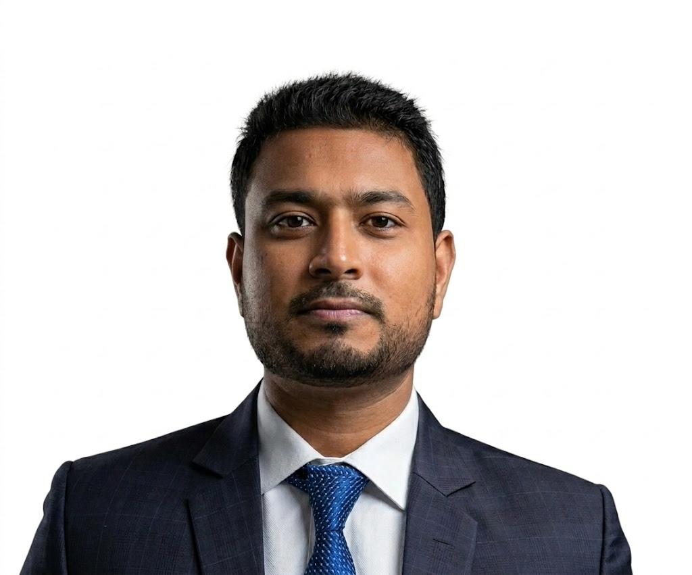

Working Student · RPX
Current roleApr 2026 – present
IT & PROCESS AUTOMATION · HAMBURG, GERMANY
Thoughtful technology.
Practical solutions.
I’m an Information Engineering student with experience in process automation and IT support. I enjoy making everyday work simpler through technology.

01 / ABOUT ME
From Bangladesh to Hamburg, I’ve followed a simple idea: technology is at its best when it helps people.
I’m pursuing a B.Sc. in Information Engineering at Hamburg University of Applied Sciences. My experience spans IT support, business administration, and process automation at Hapag-Lloyd.
I enjoy learning from my team, thinking creatively, and taking on new challenges step by step. My focus is on building useful solutions and continuously developing my skills.
02 / EXPERIENCE
Experience across shipping,
legal services, and engineering.
Hamburg, Germany
SHIPPING & LOGISTICSApr 2026 – present
Process Automation Developer
Jun 2025 – Mar 2026
Process Automation Developer
Nov 2024 – May 2025
Sep 2022 – Oct 2024
Hamburg, Germany
Feb 2021 – Aug 2022
Hamburg, Germany
Hogan Lovells International LLP
Feb 2020 – Jan 2021
Hamburg, Germany
Microsoft Excel and data entry
2020
03 / TOOLKIT
Software, data, and a hands-on
engineering foundation.
Programming and practical automation.
Working with data and enterprise systems.
From microcontrollers to lab equipment.
04 / EDUCATION
An academic path connecting electrical engineering, software, and real-world problem solving.
Programmed a LEGO MINDSTORMS EV3 to recognize and distinguish colored objects at HAW Hamburg.
B.Sc. studies in Information Engineering
German language studies · B1 & B2
B.Sc. studies in Electrical Engineering
High school · Mathematics & ICT
LANGUAGES
Bangla Native
English C1
German B2
BEYOND THE SCREEN
Programming, music,
and time outdoors.
05 / GET IN TOUCH
Connect with me about IT, automation, and engineering.